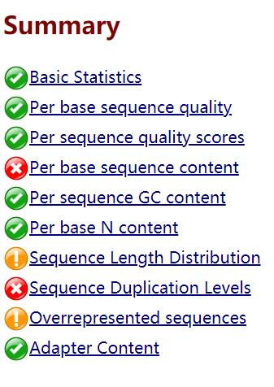
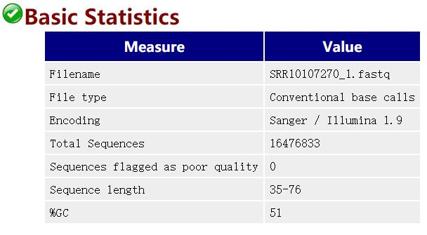
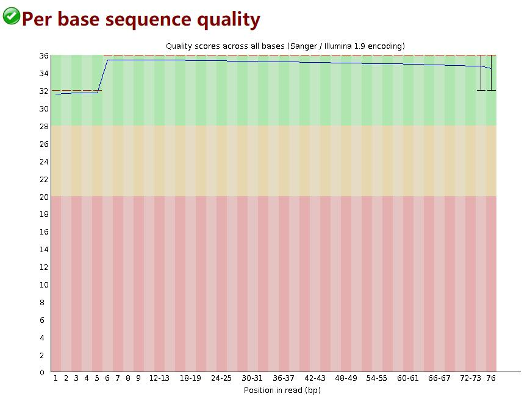
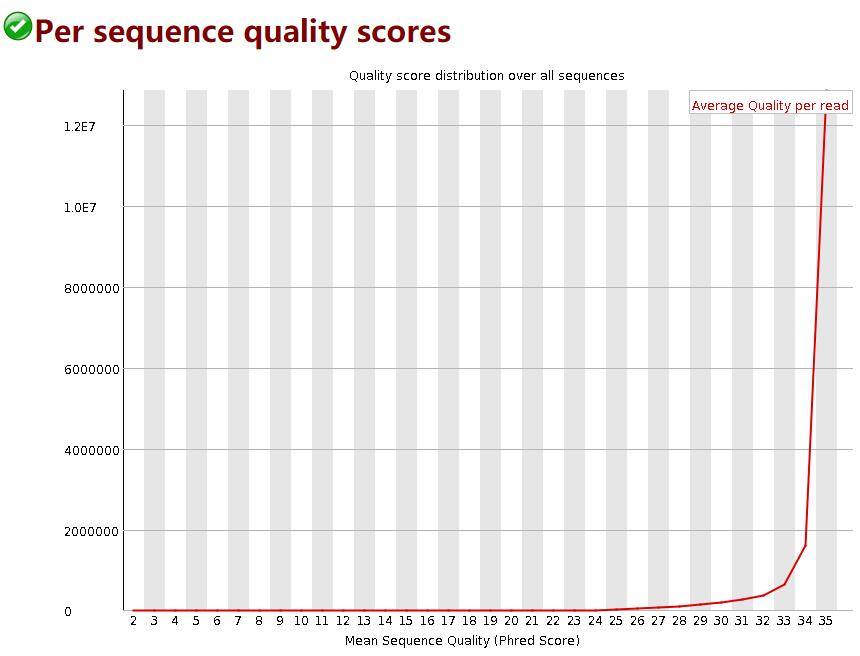
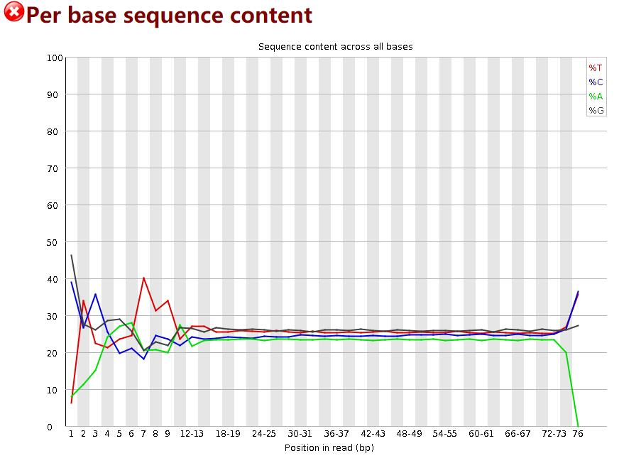
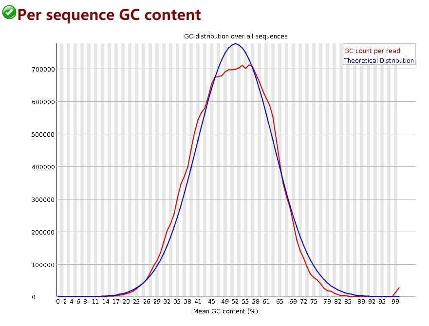
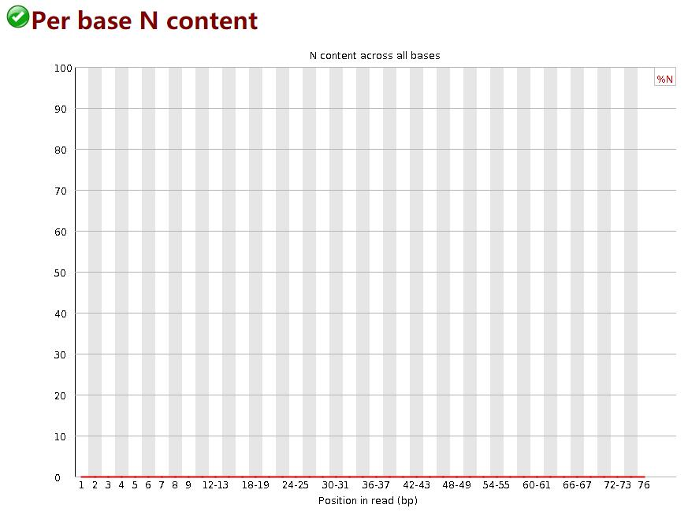
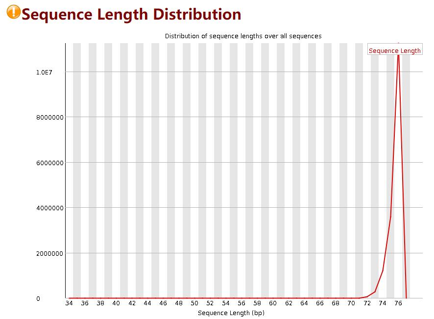
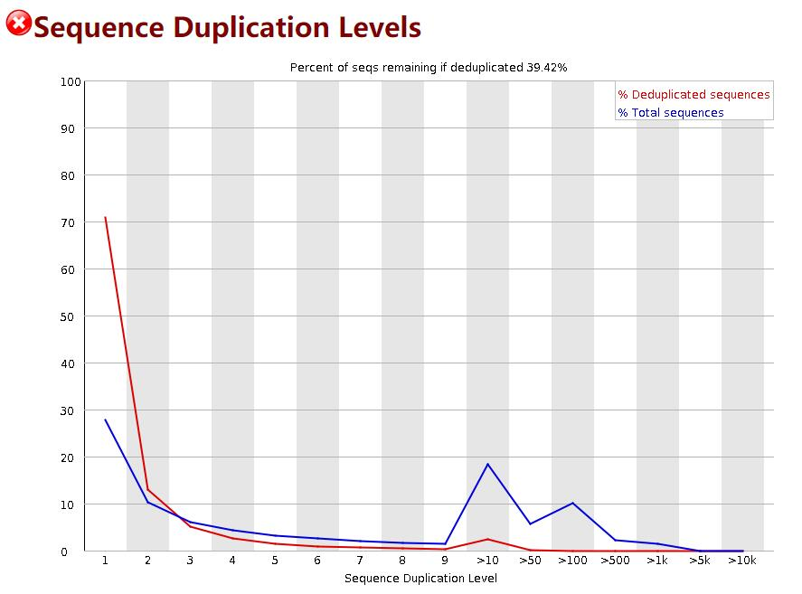
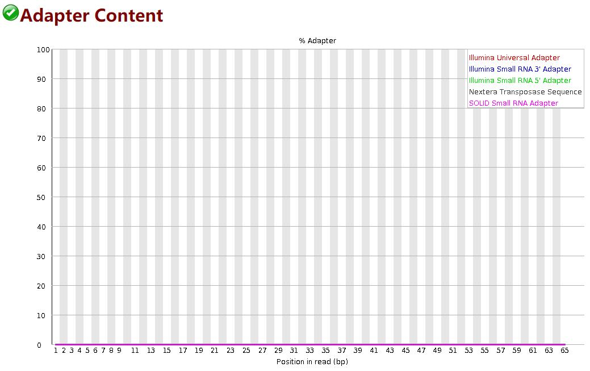

FastQC是一款用于对RNA-seq数据进行质量检测和控制的软件（对单细胞和bulk的测序数据都适用）
fastqc安装
首先需要从官网下载FastQC的安装文件
http://www.bioinformatics.babraham.ac.uk/projects/download.html#fastqc
将下载到的.zip文件解压在特定的安装位置
cd ~/sofware
unzip ~/download/fastqc_v0.11.9.zip
解压之后需要将其中的fastqc文件改成可执行文件
cd ./FastQC
chmod 755 fastqc
为了能在任意文件夹下运行程序，创建fastqc的软连接
sudo ln -s /home/ubuntu/software/FastQC/fastqc /usr/local/bin/fastqc # 文件地址必须是绝对路径
就此安装成功，可以运行fastqc -h查看命令参数
fastqc使用
FastQC参数
-o –outdir:输出路径 –extract：结果文件解压缩 –noextract：结果文件压缩 -f –format:输入文件格式.支持bam,sam,fastq文件格式 -t –threads:线程数 -c –contaminants：制定污染序列。文件格式 name[tab]sequence -a –adapters：指定接头序列。文件格式name[tab]sequence -k –kmers：指定kmers长度（2-10bp,默认7bp） -q –quiet： 安静模式
示例：
cd ~/SingleCell
mkdir fastqc_results
fastqc -t 30 -o fastqc_results Share/ERR522959_1.fastq Share/ERR522959_2.fastq
fastqc结果查看
fastqc产生两个结果文件：
**html：**网页版结果 **zip：**本地结果压缩文件
需要重点关注的信息有：
- Basic Statistics：对数据量的概览
- Per base sequence quality：reads每个位置测序质量最直接的展示
- Per sequence quality scores：总体reads测序质量趋势
- Per base sequence content：ATGC含量估计测序是否存在偏差
- Sequence Duplication Levels：影响测序的因素太多，查看是否存在污染，数据处理时是否需要去冗余；现在数据量都可以满足需求，因此前期数据处理时，尽量高标准，严格质控
网页结果汇总如下 ：

各种颜色是各项标准分析结果：绿色代表"PASS"；黄色代表"WARN"；红色代表"FAIL"。

reads上每个位置碱基质量 质量分数使用Fred quality，Q=-10*log10(p)，p为碱基测序错误概率。 横轴碱基的位置，纵轴是质量分数。红色表示中位数，黄色是25%-75%区间，触须是10%-90%区间，蓝线是平均数。 平均每个碱基的测序质量boxplot下四分位线在30分以上，则认为测序质量非常好；一般情况下，reads首尾质量较差。 若任一位置的下四分位数低于10或中位数低于25，报"WARN"； 若任一位置的下四分位数低于5或中位数低于20，报"FAIL"。

每条序列的测序质量分布 横轴为序列测序质量，纵轴是reads数目。一般认为90%的reads测序质量在35分以上，则认为该测序质量非常好。 当测序质量峰值小于27（错误率0.2%）时报"WARN"; 当峰值小于20（错误率1%）时报"FAIL"。

统计reads每个位置ATCG四种碱基的分布： 横轴为碱基位置，纵轴为百分比。因为随机的文库中，正常情况下所有位置出现某种碱基的概率是相近的，因此好的测序结果中四条线应该平行且接近。当部分位置碱基的比例出现bias时，即四条线在某些位置纷乱交织，往往提示我们有overrepresented sequence的污染。当所有位置的碱基比例一致的表现出bias时，即四条线平行但分开，往往代表文库有bias (建库过程或本身特点)，或者是测序中的系统误差。 当任一位置的A/T比例与G/C比例相差超过10%，报"WARN"； 当任一位置的A/T比例与G/C比例相差超过20%，报"FAIL"。

统计reads的平均GC含量分布 红线是实际情况，蓝线是理论分布（正态分布，均值不一定在50%，而是由平均GC含量推断的）。 曲线形状的偏差往往是由于文库的污染或是部分reads构成的子集有偏差（overrepresented reads）。形状接近正态但偏离理论分布的情况提示我们可能有系统偏差。偏离理论分布的reads超过15%时，报"WARN"；偏离理论分布的reads超过30%时，报"FAIL"。

统计reads每个位置N的比率 reads某个位置无法确定是何种碱基时，使用N代替； 正常情况下，N的比例是很小的，所以图上常常看到一条直线，但放大Y轴之后会发现还是有N的存在，这不算问题。当Y轴在0%-100%的范围内也能看到“鼓包”时，说明测序系统出了问题。 当任意位置的N的比例超过5%，报"WARN"； 当任意位置的N的比例超过20%，报"FAIL"。

reads长度分布 为了防止建库或者测序时有一些不规则长度的序列也被进行测序而进行的一个对长度的统计，当所有序列的长度不一样，fastqc就会警告。 当reads长度不一致时报"WARN"； 当有长度为0的read时报“FAIL”。

统计reads重复水平 测序本身就会产生重复reads,测序深度越高,reads重复数越大；如果重复出现峰值，就提示可能b存在偏差（如建库过程中的PCR duplication）。 横坐标是重复的次数，纵坐标是duplicated reads占unique reads种数百分比。
fastqc抽取reads文件前200,000条reads统计其重复情况。重复数目大于等于10的reads被合并统计，这也是为什么我们看到上图的最右侧略有上扬。大于75bp的reads只取50bp进行比较。由于reads越长错误率越高，所以其重复程度仍有可能被低估。 当非unique的reads占总数的比例大于20%时，报"WARN"； 当非unique的reads占总数的比例大于50%时，报"FAIL“。

过度重复出现的序列的统计信息
Adapter序列在reads中出现概率 接头序列统计，>5%时是Warning，>10%时是Failure。

参考：